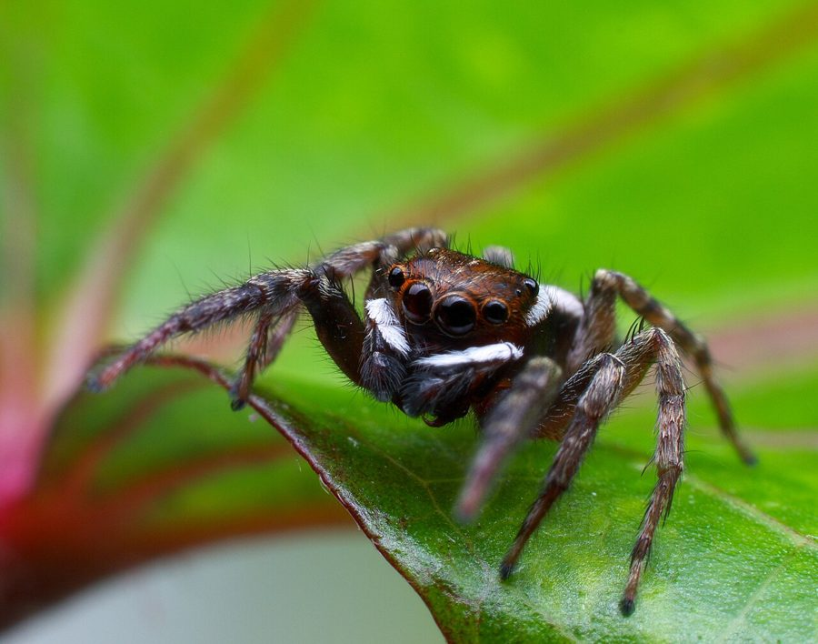

घरेलू मकड़ीAdanson's Jumping Spider
Hasarius adansoni · Salticidae · SPD-0006

- Scientific name
- Hasarius adansoni (Audouin, 1826)
- Family
- Salticidae
- Hindi
- घरेलू मकड़ी
- Status here
- native
- IUCN
- not evaluated
When to look कब देखें
Present all year.
घरेलू मकड़ी / Adanson's Jumping Spider
Hasarius adansoni (Audouin, 1826) — Salticidae
घरेलू मकड़ी (अडांसन्स जंपिंग स्पाइडर) — घरों, खिड़कियों और दीवारों पर पाई जाने वाली एक अत्यंत सामान्य और छोटी कूदने वाली मकड़ी है। इसके पास आठ आंखें होती हैं, जिनमें से आगे की दो आंखें बहुत बड़ी और दूरबीन (stereoscopic vision) जैसी होती हैं, जो इसे बेहतरीन दृष्टि प्रदान करती हैं। नर मकड़ी गहरे भूरे या काले रंग की होती है, जिसके सिर के पिछले हिस्से पर सफेद रंग का अर्ध-चंद्राकार (white crescent) बैंड और पेट पर सफेद धब्बे होते हैं। मादा थोड़ी बड़ी और हल्के रेतीले-भूरे (sandy-brown) रंग की होती है। यह मकड़ी कोई जाला नहीं बनाती; यह दीवारों पर बैठकर मक्खियों और मच्छरों को ताकती है और एक झटके में उन पर कूदकर (jump) शिकार कर लेती है। यह पूरी तरह से विषहीन और मानव के लिए अत्यंत लाभकारी जीव है।
Quick Identification त्वरित पहचान
| Feature | Description |
|---|---|
| Form | Small, compact spider; cephalothorax is broad and high; abdomen is oval |
| Male Colour | Dark brown to black; features a striking white crescent-shaped band on the back of the head and white spots on the abdomen |
| Female Colour | Uniformly lighter sandy-brown or light brown, with less distinct darker chevrons on the abdomen |
| Eyes | Two massive, shiny, forward-facing principal eyes; turns its body to face observers |
| Movement | Quick, rapid runs followed by sudden pauses; hops or jumps over cracks and onto prey |
| Behaviour | Strictly active hunter; does not construct webs for capturing prey; spins a small silk cell for resting and egg-laying |
Field tip: Look closely at window frames or painted walls inside your house. If you see a small, dark spider under 8 mm that raises its front legs slightly and turns to look directly at you when you approach, it is Adanson's Jumping Spider. Completely harmless to humans.
Morphology आकारिकी
Biometrics (typical measurements for specimens in household habitats of eastern UP):
| Measurement | Range |
|---|---|
| Body length (female) | 6.0–8.0 mm |
| Body length (male) | 5.0–7.0 mm |
| Leg span | 12–16 mm |
Eyes: Has eight eyes arranged in three rows. The front row contains four eyes: two enormous anterior median eyes (AME) that provide high-resolution, stereoscopic, and colour vision, and two smaller anterior lateral eyes (ALE). The second row contains two tiny eyes, and the third row has two medium-sized posterior lateral eyes (PLE), giving the spider near 360-degree vision.
Male markings: The cephalothorax is dark brown-black. It has a prominent, curved white stripe across the posterior part of the cephalothorax. The abdomen features a central white band and a pair of white spots near the rear. The legs are brown with white bands on the joints.
Female markings: The female is larger and less contrasted. Her base colour is light brown or grey-brown, with fine, darker chevron-like patterns on the abdomen and pale legs.
Behaviour & Ecology व्यवहार और पारिस्थितिकी
Visual hunter and wall crawler.
- Stereoscopic hunting: Detects movement from up to 30 cm away using its lateral eyes, then turns its body to lock its giant principal eyes onto the prey. It slowly stalks the prey like a cat, approaches within 2–3 cm, anchors a silk safety line (dragline) to the wall, and leaps onto the insect.
- Dragline safety: Before every jump, the spider taps its spinnerets to the surface, securing a silk dragline. If it misses the target or falls, it climbs back up the thread.
- Silken retreats: Spends the night or periods of moulting inside a small, pocket-like, white silk retreat constructed in wall crevices, window corners, or behind picture frames.
Ecological Role पारिस्थितिक भूमिका
Household pest predator. Hasarius adansoni is a highly effective generalist predator in home environments. It preys on common domestic insects, including mosquitoes, house flies, midges, and small ants. By controlling insect vector populations inside living spaces, it provides an important, free ecological health service.
Life Cycle / Phenology जीवन चक्र
- Breeding: Courtship and mating occur year-round indoors, but activity peaks from April to September.
- Courtship display: The male performs a rhythmic courtship dance in front of the female, raising and waving his first pair of legs, bobbing his abdomen, and moving side-to-side to prove he is a mate and not prey.
- Egg guarding: The female lays a clutch of 20 to 40 eggs inside a dense silken cocoon built within her retreat. She remains inside the nest to guard the eggs, refusing to feed until they hatch.
- Hatching: Eggs hatch in 15–20 days. The spiderlings disperse after their first moult and are fully independent.
Host Plants or Prey आहार
Carnivorous diet (live prey only):
- Household insects: Mosquitoes (
[INS-0035 Southern House Mosquito]), house flies, fruit flies, and small moths. - Arthropods: Tiny beetles, other small spiders, and ants.
Predators / Natural Enemies शत्रु
- Lizards: The Common House Gecko (
[REP-0003 House Gecko]) is its primary predator on indoor walls. - Predatory wasps: Mud dauber wasps and spider-hunting wasps paralyse adult jumping spiders to stock their clay nests.
- Birds: Small insectivorous birds like the Tailorbird (
[BRD-0015]) hunt them on external windows and walls.
Agricultural / Human Relevance कृषि प्रासंगिकता
Safe household helper. Hasarius adansoni is completely harmless to humans. Its chelicerae (jaws) are too small to bite human skin, and its venom has no medical effect on mammals. It acts as a natural mosquito control agent in bedrooms and kitchens. Educating Basti residents to protect these spiders rather than sweeping them away is a key goal of this atlas.
Expected Locally स्थानीय रूप से अपेक्षित
Not a field record. Written from published accounts for eastern Uttar Pradesh. No confirmed local sighting yet — if you have seen it, that is what the atlas needs.
अभी तक स्थानीय पुष्टि नहीं। यह विवरण प्रकाशित स्रोतों से है, किसी अवलोकन से नहीं।
Commonly found in both mud-walled and concrete houses throughout Basti district. They are most active on sun-facing walls and window panes during morning hours. Sighted frequently near indoor lights at night, waiting for moths and mosquitoes.
Distribution वितरण
Global range: Cosmopolitan species. Native to East Asia, but has been introduced globally via shipping and trade, and is now established in tropical and subtropical regions worldwide.
In India: Widespread in all states, primarily associated with human habitations.
In Uttar Pradesh: Abundant in all cities, towns, and villages.
In Basti district / eastern UP: Highly common indoor resident in all blocks.
Research Questions शोध प्रश्न
- Does the presence of Hasarius adansoni on household walls significantly reduce the survival rate of resting Culex mosquitoes? / क्या घरेलू दीवारों पर इस मकड़ी की उपस्थिति से मच्छरों की संख्या में कोई कमी आती है?
- How does the hunting success rate of Hasarius adansoni differ on smooth painted plaster walls versus rough brick walls? / चिकनी पुताई वाली दीवारों बनाम खुरदरी ईंट की दीवारों पर इस मकड़ी के शिकार की सफलता दर क्या है?
- What is the frequency of egg cocoon parasitism by small wasps in rural vs. urban homes in Basti?
- Does Hasarius adansoni display visual avoidance behavior when encountering aggressive ants like the Tropical Fire Ant (
[INS-0039])? - Can children use magnifying sheets to observe and draw the eight eyes of a jumping spider resting in their house? — An easy, educational citizen science activity.
Similar Species मिलती-जुलती प्रजातियाँ
| Species | How to tell apart |
|---|---|
Plexippus paykulli (Pantropical Jumping Spider [SPD-0003]) | Slightly larger; male has a central white stripe on the cephalothorax (not a rear crescent); female has a more contrasted brown chevron pattern. |
| Plexippus petersi (Peters' Jumping Spider) | Very similar size; male has a white crown mark on the cephalothorax rather than a distinct rear crescent; common on walls. |
| Menemerus bivittatus (Gray Wall Jumper) | Body is much flatter; grey-coloured with black stripes; remains flat against walls and moves sideways; lacks yellow/crescent marks. |
Taxonomy & Classification वर्गीकरण
Original description. Jean Victoire Audouin described the Adanson's Jumping Spider as Attus adansonii in 1826 in Savigny's Description de l'Égypte... Histoire Naturelle (Vol. 1, part 4, p. 169). The species was named in honour of Michel Adanson, the French naturalist. It was later moved to the genus Hasarius Simon, 1871. The authority is written in parentheses as (Audouin, 1826).
Subspecies. Monotypic — no subspecies are currently recognised.
Family and order placement. Placed in the order Araneae, suborder Araneomorphae, family Salticidae, subfamily Salticinae.
Phylogenetic notes. Hasarius adansoni is the type species of the genus Hasarius. Molecular phylogenetics places this genus within the Plexippoida group, showing close evolutionary links to the genus Plexippus.
IUCN status rationale. Not assessed (NE) by the IUCN Red List. As a highly successful global synanthropic species that thrives in human housing, it has a stable and secure population facing no conservation threats.
Photo Gallery फोटो गैलरी
References संदर्भ
- Audouin, V. (1826). Explication sommaire des planches d'arachnides de l'Égypte et de la Syrie. In: Savigny, M.J.C. Description de l'Égypte, Vol. 22, 99–186. [original description]
- Pocock, R. I. (1900). The Fauna of British India, including Ceylon and Burma. Arachnida. Taylor & Francis, London.
- Tikader, B. K. (1987). Handbook of Indian Spiders. Zoological Survey of India, Calcutta.
- Hill, D. E. (2009). Behavior of jumping spiders of the genus Hasarius. Peckhamia, 75(1), 1-12.
- Zoological Survey of India. State Fauna Series: Fauna of Uttar Pradesh — Araneae. ZSI, Kolkata.
- GBIF Occurrence Data — Hasarius adansoni, South Asia (2026). GBIF taxon key: 2177741.
Source file: species/fauna/spiders/adansons_jumping_spider.md